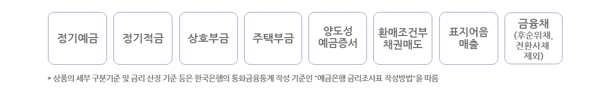
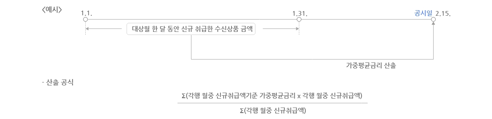
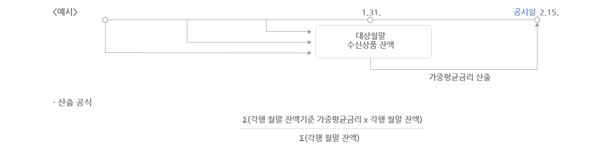
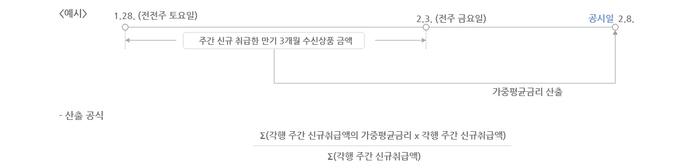
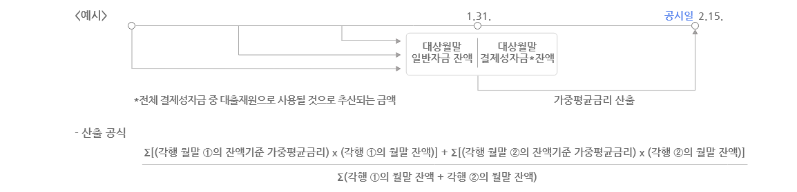

- 대상월 한 달 동안 신규로 취급한 수신상품 금액(신규취급액)의 가중평균금리입니다.

- 대상월말 보유하고 있는 수신상품 잔액의 가중평균금리입니다.

- 주간 신규로 취급한 만기 3개월의 수신상품 금액(주간 신규취급액)의 가중평균금리입니다.

- 상기의 산출대상 수신상품에 기타 예수금, 기타 차입금, 결제성자금 등을 추가로 포함하여, 대상월말 보유하고 있는 자금 잔액의 가중평균금리입니다.
① 일반자금 : 상기 산출대상 수신상품에 기타 예수금*과 기타 차입금**을 포함합니다.
* 은행간거래 정기예금, 비거주자예금 등
** 한국은행차입금, 정부차입금, 후순위채, 전환사채 등
② 결제성자금 : 전체 결제성자금 중 대출재원으로 사용될 것으로 추산되는 금액이 반영됩니다.
